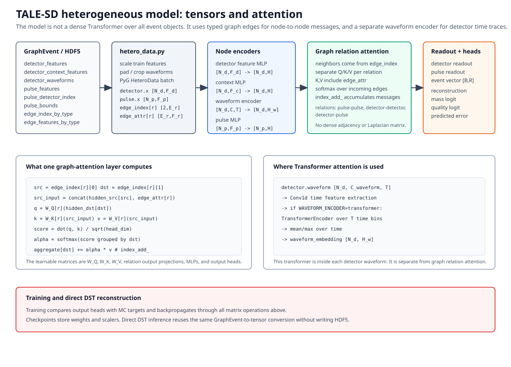

Heterogeneous model explained
This page explains the current TALE-SD heterogeneous model from input arrays to output predictions. It follows the teaching style of the official PyTorch Dataset/DataLoader tutorial, the official PyTorch training tutorial, and the official PyG heterogeneous graph guide: first define the data object, then define the model, then show how training and inference use the same inputs.
The code paths described here are the actual code paths used by the repository:
Step |
Implementation |
|---|---|
HDF5 sample read/write |
|
Tensor / PyG conversion |
|
Model |
|
Training |
|
Direct DST inference |
|
Forward-pass overview
{kind=link}

The model keeps a full event graph. Detector waveforms are stored once on
detector nodes. Pulse nodes keep pulse_detector_index and
pulse_bounds. Relation attention updates detector and pulse states, and
type-wise readout produces one event vector.
One event as a heterogeneous data object
PyG represents heterogeneous graphs with separate node stores and edge stores. The TALE-SD graph uses the same idea. One event has two node types and three relation types:
node types:
detector
pulse
edge types:
("pulse", "interacts", "pulse")
("detector", "near", "detector")
("detector", "observes", "pulse")
The production training path uses PyG HeteroData for batching. The HDF5
dataset returns one HeteroData object per event, and
torch_geometric.loader.DataLoader batches those objects. Inside
MinimalHeteroTaleSdGNN.forward, the batched HeteroData object is
converted back to the repository's explicit tensor dictionary by
hetero_data_to_tensors. Direct single-event paths can also feed the explicit
tensor dictionary directly. This is the actual structure built by
hetero_data.sample_to_hetero_data before batching:
data["detector"].x = tensors["detector"]["x"]
data["detector"].context = tensors["detector"]["context"]
data["detector"].pos = tensors["detector"]["pos"]
data["detector"].lid = tensors["detector"]["lid"]
data["detector"].waveform = tensors["detector"]["waveform"]
data["pulse"].x = tensors["pulse"]["x"]
data["pulse"].pos = tensors["pulse"]["pos"]
data["pulse"].lid = tensors["pulse"]["lid"]
data["pulse"].detector_index = tensors["pulse"]["detector_index"]
data["pulse"].pulse_bounds = tensors["pulse"]["pulse_bounds"]
data["pulse", "interacts", "pulse"].edge_index = ...
data["pulse", "interacts", "pulse"].edge_attr = ...
data["detector", "near", "detector"].edge_index = ...
data["detector", "near", "detector"].edge_attr = ...
data["detector", "observes", "pulse"].edge_index = ...
data["detector", "observes", "pulse"].edge_attr = ...
This is not a single homogeneous feature matrix. Detector nodes and pulse nodes carry different fields because they represent different physical objects.
Input fields
detector_features are detector-level signal, timing, and local geometry
features. detector_context_features are readout and calibration context.
Keeping them separate makes it possible to include, remove, or ablate context
without silently mixing it with shower features.
detector_waveforms are full detector-level calibrated VEM waveforms. They
are not duplicated on pulse nodes. A pulse points back to its detector with
pulse_detector_index and records the relevant time window through
pulse_bounds.
pulse_features contain pulse timing, charge, core-relative coordinates when
the Ising reference core exists, and Ising annotations. Ising-rejected pulse
candidates are kept as input because delayed pulses, waveform tails, and
multi-pulse structure are physically relevant for mass and energy.
edge_features_by_type stores continuous physical edge attributes. For
example, pulse-pulse edges include timing differences, spatial separation, and
Ising weights. These are not just labels; they are numerical inputs to the
attention calculation.
Conversion and scaling
hetero_sample_to_tensors converts NumPy arrays from HDF5 or direct DST
graphs into tensors. If scalers are supplied, detector, context, pulse, edge,
and target arrays are standardized using training-split statistics.
detector_features = _scale_tensor(
detector_features,
_scaler_for(scalers, "detector", "detector_features"),
)
detector_context = _scale_tensor(
detector_context,
_scaler_for(scalers, "detector_context", "detector_context_features"),
)
pulse_features = _scale_tensor(
pulse_features,
_scaler_for(scalers, "pulse", "pulse_features"),
)
edge_features_by_type[relation] = _scale_tensor(
edge_features,
_scaler_for(scalers, f"edge:{relation}", relation),
)
target_tensor = _scale_tensor(target_tensor, _scaler_for(scalers, "target"))
This mirrors the PyTorch Dataset/DataLoader separation: the dataset reads one sample, the conversion layer turns it into a typed graph object, the PyG DataLoader batches typed graph objects, and the model receives a unified tensor dictionary internally.
Detector and pulse encoders
The model first embeds each detector and each pulse into a common hidden dimension.
Detector nodes have three input branches:
detector_features -> detector feature MLP
detector_context_features -> detector context MLP
detector_waveforms -> waveform encoder
concat -> detector_node_encoder
Pulse nodes have one scalar branch:
pulse_features -> pulse_node_encoder
The waveform encoder is applied once per detector. For the first transformer
waveform sweep, the submitter sets WAVEFORM_ENCODER=transformer. The graph
attention architecture remains hetero_attention.
Relation attention
The core message-passing layer is HeteroAttentionMessageLayer. For each
relation type, it builds separate query, key, and value projections:
src_input = torch.cat([src_state[src_index], edge_attr], dim=-1)
query = self.query[relation](dst_state[dst_index]).view(-1, self.heads, self.head_dim)
key = self.key[relation](src_input).view(-1, self.heads, self.head_dim)
value = self.value[relation](src_input).view(-1, self.heads, self.head_dim)
scores = (query * key).sum(dim=-1) * scale
weights = _scatter_softmax(scores, dst_index, dst_state.shape[0])
messages = (value * weights[:, :, None]).reshape(-1, self.hidden_dim)
The important TALE-specific point is that key and value include
edge_attr. This lets the model decide which neighboring pulse or detector
matters while seeing physical quantities such as dt_usec, distance_km,
dt_per_km, and ising_weight.
After messages are accumulated, detector and pulse states are updated with a residual connection, layer normalization, and a feed-forward block:
new_state = LayerNorm(old_state + update(old_state, aggregated_message))
new_state = LayerNorm(new_state + FFN(new_state))
This is inspired by HGT, but it is not an exact HGT implementation. The current
model does not use PyG HGTConv and does not use HGSampling. Each TALE event
is one graph and is read as a whole.
Readout
Training and inference need one prediction per event, not one prediction per
node. HeteroAttentiveReadout therefore pools detector nodes and pulse nodes
separately:
detector states -> mean, max, attention-weighted sums
pulse states -> mean, max, attention-weighted sums
concat -> event vector
This makes the readout type-aware. A detector and a pulse are not forced into one shared pool before the model has summarized them.
Output heads
The event vector is passed to task-specific heads:
Head |
Output |
Meaning |
|---|---|---|
Reconstruction |
6 values |
|
Mass |
1 logit |
|
Quality |
1 logit |
auxiliary quality score |
Predicted error |
3 values |
predicted energy, angular, and core uncertainties |
The current comparison plan is not to enable every auxiliary head at once. For the first transformer waveform sweep, run six jobs: three dataset sizes times quality-only or predicted-error-only reco+mass.
Training
train_hetero_model follows the standard PyTorch training pattern:
H5HeteroGraphDataset
-> split train / validation / test
-> fit scalers on train split
-> build model from first sample
-> PyG DataLoader batches HeteroData samples
-> model converts batched HeteroData to explicit tensor dict
-> forward
-> compute loss against MC target
-> backward
-> optimizer step
-> save checkpoint and scalers
The checkpoint stores both model weights and the scalers. That is why direct DST reconstruction can use the same feature normalization as training.
Direct DST reconstruction
Direct inference does not require HDF5. It uses the same graph schema and the same model conversion:
DST
-> dstio.tale.graph.iter_graphs
-> graph_event_to_sample
-> hetero_sample_to_tensors or sample_to_hetero_data
-> hetero_attention checkpoint
-> reconstruction CSV
This is the final reconstruction path. HDF5 remains a training cache, not a required intermediate file for production DST reconstruction.
Server command for the first transformer sweep
After the balanced HDF5 files are ready, submit the first six transformer jobs with:
cd /dicos_ui_home/ikomae/work/src/talesd_gnn_reconstruction
RUN_ID=hetero_balance_20260606_143020 \
SUBMIT_EXPORTS=0 \
SUBMIT_TRAINING=1 \
MODEL_ARCHITECTURE=hetero_attention \
WAVEFORM_ENCODER=transformer \
PARTITION=v100-al9_long \
scripts/submit_server_hetero_dataset_size_sweep.sh
This submits quality-only and predicted-error-only reco+mass training for the
50000, 20000, and 10000 events/bin datasets. The cnn-gru waveform encoder
should be compared later under the selected condition, not run as a simultaneous
six-job sweep at this stage.